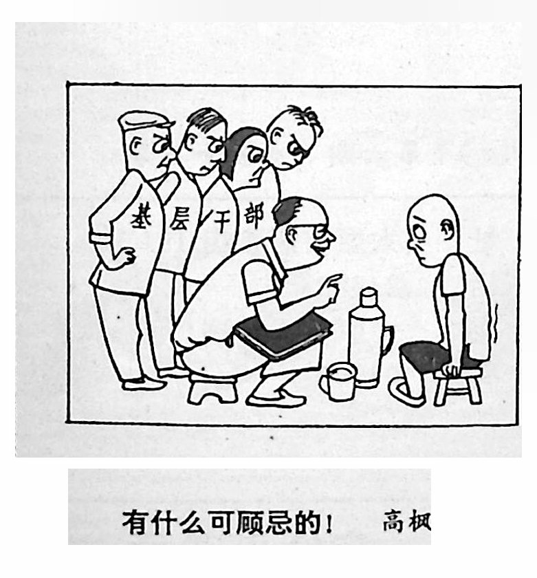

高枫 《人事》1990年第6期（总第57期），封三
有什么可顾忌的！
What Is There to Be Afraid Of!
- Text in the drawing
- 基 / 层 / 干 / 部
Grass-roots cadres (one character on each person) - Description
- A bespectacled official squats beside a thermos and urges a nervous young man to speak freely — while behind them four glowering people, labeled together as “grass-roots cadres,” loom over the conversation.
- Note
- The scene parodies a leader “going down” to solicit candid opinions from the masses while the local cadres stand watching.
- Artist
- Gao Feng 高枫
- Published in
- 《人事》1990年第6期（总第57期）, inside back cover
- Themes
- Bureaucratism · Complaints and petitions

Cite
Gao Feng, “有什么可顾忌的！” [What Is There to Be Afraid Of!], Renshi (Personnel) 《人事》, 1990, no. 6, inside back cover.